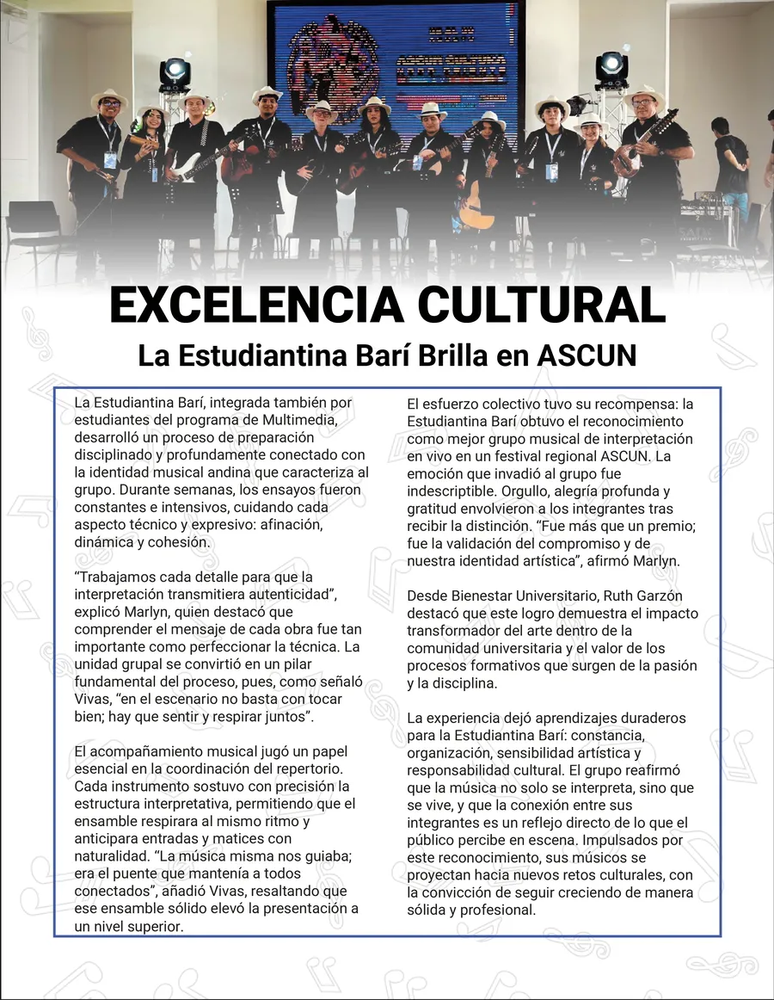

Excelencia DeportivaPágina de Santiago Daniel Colmenares Jaimes

Excelencia CulturalHecha entre los dos
Materia
Diseño Gráfico Digital, 4.º semestre, Ingeniería Multimedia, Universidad Simón Bolívar
Herramientas
Illustrator y Photoshop (edición de fotos)
En conjunto con
Santiago Daniel Colmenares Jaimes
El pedido
Diagramar páginas para la revista semestral del evento Showroom. Nosotros mismos escribimos la noticia, tomamos las fotos, diagramamos y creamos las decoraciones.
Quién hizo qué
Yo hice la página de Excelencia Académica. Santiago Daniel hizo la de Excelencia Deportiva. La de Excelencia Cultural la hicimos entre los dos.
La idea
Presentar a estudiantes de Ingeniería Multimedia con excelencias. Las personas y participantes de estas páginas lo resaltaron mucho, porque es un orgullo para la carrera.